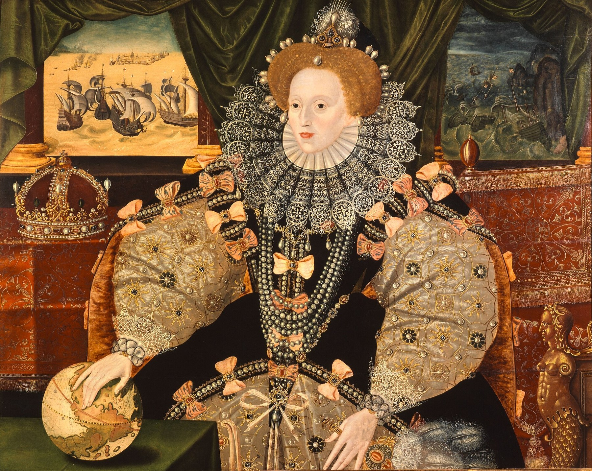
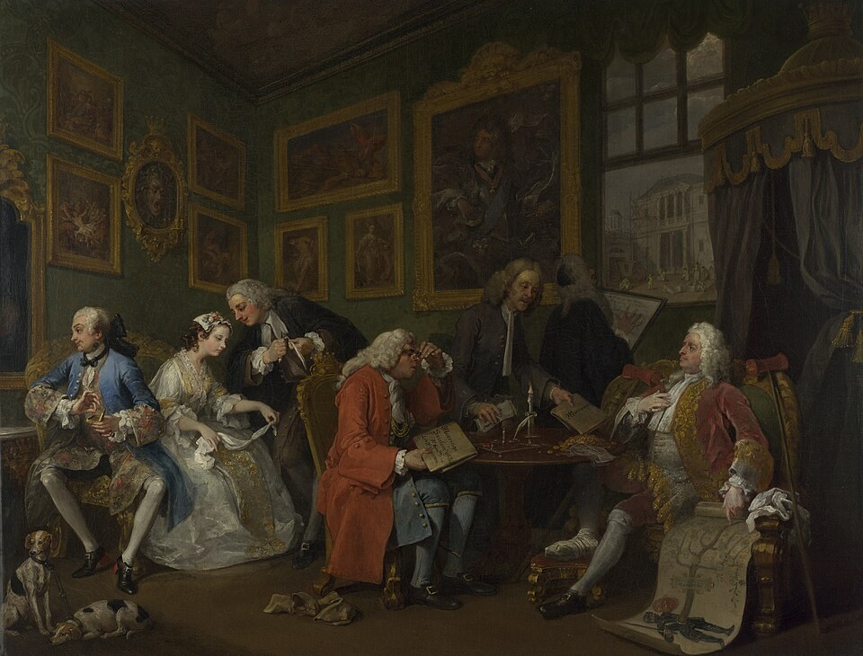
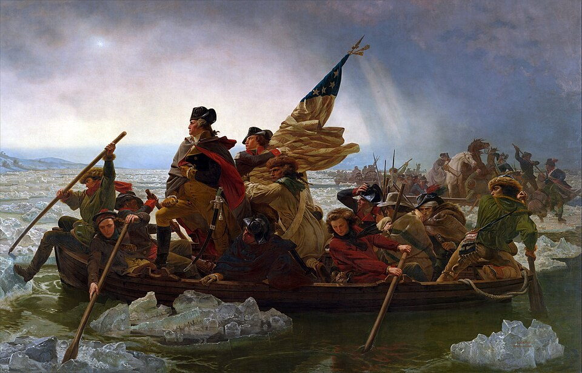
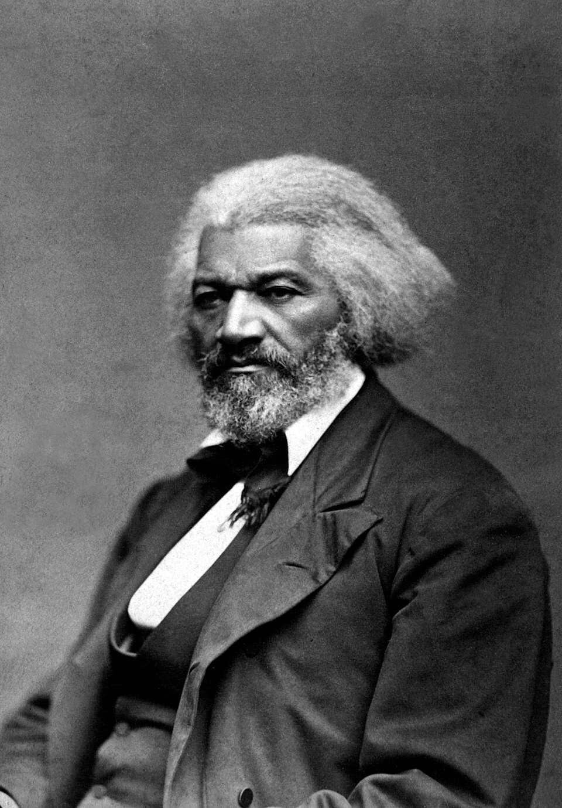
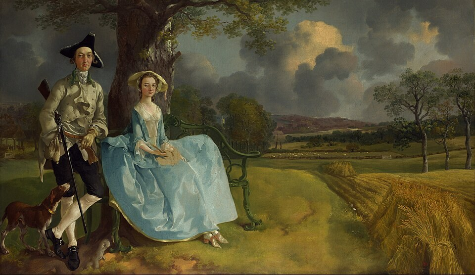

Sans JavaScript, tous les onglets restent visibles à la suite.
Présentation de la séquence

How have kings, queens, presidents and campaigners in the English-speaking world used images to win power?
Axis: Art and Power (Art et pouvoir). Target level: B1 towards B2. Première, lycée général et technologique. Each lesson lasts 55 minutes, timed to 52 minutes.
Links with the official programme
| Programme | In this sequence |
|---|---|
| Axis: Art and Power | Royal portraits, satire, national myths, photography as a weapon for freedom. |
| Cultural references | Tudor England, Georgian London, the American Revolution, the abolition of slavery in the USA. |
| Five language activities | Reading, listening, writing, speaking (continuous), speaking (interaction). |
| Grammar and lexis | Describing a picture, modals of deduction, comparatives, past simple and present perfect, the passive, linking words. |
| Final task | Curate a mini exhibition and give a gallery talk. |
Skills practised and assessed
| Skill | Where? |
|---|---|
| Reading comprehension | Every lesson: a short text about the work, first scanning, then interpreting. |
| Listening comprehension | Lessons 3 and 4: a short museum video with a listening grid. Lessons 1, 2, 5 and 6: a short text or quotation read aloud. |
| Writing | A short text every lesson, a gallery label and an essay at the end. |
| Speaking (continuous) | Every student speaks at the end of every lesson. Gallery talk in the lesson after lesson 6. |
| Speaking (interaction) | Pair work on every painting, debate in lesson 5. |
Lessons at a glance
| Lesson | Work of art | Language focus |
|---|---|---|
| 1. The Queen Who Stood on England | The Ditchley Portrait of Elizabeth I | Describing a picture |
| 2. The Body of the King | Henry VIII, after Holbein | Modals of deduction |
| 3. Laughing at the Powerful | Hogarth, Marriage A-la-Mode | Comparatives |
| 4. Painting a Nation | Leutze, Washington Crossing the Delaware | Past simple and present perfect |
| 5. The Camera as a Weapon | Portrait photographs of Frederick Douglass | The passive |
| 6. Land, Wealth and Power | Gainsborough, Mr and Mrs Andrews | Linking words, final task |
Assessments: a diagnostic test (lesson 1), a mid-sequence test (end of lesson 3) and a summative assessment (lesson 6 and the following lesson). Teacher grids and self-assessment grids are in the Évaluations tab.
An art trail
Seven works from London, Liverpool, New York and Washington. Many of our students will never visit these museums: this sequence brings the museums to them.
Méthode de la spirale conçue par Madame Carole Paoli Pompougnac
© 2026 Madame Carole Paoli Pompougnac · CC BY-NC-SA 4.0
Fiche professeur : la séquence en un coup d'œil
| Item | Content |
|---|---|
| Level | Première, lycée général et technologique, LVA or LVB. B1 towards B2. |
| Axis | Art and Power. |
| Key question | How have kings, queens, presidents and campaigners in the English-speaking world used images to win power? |
| Length | 6 lessons of 55 minutes, plus the oral lesson. Each lesson is timed to 52 minutes. |
| Final task | A museum label and a three-minute gallery talk. |
| Grammar | Present simple and continuous, modals of deduction, comparatives, past simple and present perfect, the passive, linking words. Presented as Étude de la langue, in paliers. |
| Cross-curricular links | History (Tudors, American Revolution, abolition), French (argument), the arts. |
| Differentiation | Dyslexia-friendly version in its own tab and in each lesson. Word banks on the board for weaker students. A version for the student who cannot come to class. |
Answer sheet for colleagues
| Lesson | Key ideas |
|---|---|
| 1 | A portrait is a message: the Queen protects England. |
| 2 | The pose shows strength; copies spread the King's image. |
| 3 | Satire criticises the powerful; engravings reach ordinary people. |
| 4 | A painting can create a national myth, even with mistakes. |
| 5 | Images can also be a weapon for the powerless. |
| 6 | Power is also shown by what a picture hides. |
To read each painting, students can follow the spiral method: I notice, I spot, I understand, I anticipate, I find the meaning.
Méthode de la spirale conçue par Madame Carole Paoli Pompougnac
Sources and resources
Why these sources? The official texts set the axis; the museums give reliable information on each work.
- Bulletin officiel, the eight axes of the cycle terminal: education.gouv.fr
- Éduscol, languages, voie générale et technologique: eduscol.education.fr/1726
- National Portrait Gallery, National Gallery, Walker Art Gallery, The Metropolitan Museum of Art: the pages of each work.
© 2026 Madame Carole Paoli Pompougnac · CC BY-NC-SA 4.0
Lesson 1 · The Queen Who Stood on England
Question of the day: what does this portrait want us to believe?
The five language activities of the lesson
- CEReading comprehension32 to 38: read the short text about the Ditchley Portrait and answer the questions.
- COListening comprehensionListen once to the short text read aloud and note who ordered the painting, and where the Queen is standing.
- PEWritingDiagnostic test; written record; homework.
- POSpeakingWarm-up: one word per student; pair work: describe, then interpret; one sentence at the end.
- PIOral interactionPair work: describe the portrait, then interpret it.
For students
Today you will: look at the Ditchley Portrait, learn how to describe a picture, read a short text, and write a first record of what a royal portrait is trying to say.
At the museum
Marcus Gheeraerts the Younger, Elizabeth I (The Ditchley Portrait), about 1592, oil on canvas, National Portrait Gallery, London. Public domain.
The Queen stands on a map of England. Behind her, the sky is stormy on one side and sunny on the other.
Question: why is she so big, and England so small?
The painting itself is not reproduced on this page: it already appears on another sequence of the site. The teacher projects a public-domain reproduction in class.
Lesson plan (55 minutes, timed to 52 minutes)
| Minutes | Activity |
|---|---|
| 0 to 3 | Warm-up: the painting on the board, one word per student. |
| 3 to 10 | Diagnostic test. |
| 10 to 13 | Listening: the short text read aloud. |
| 13 to 20 | Building your vocabulary: describing a painting. |
| 20 to 32 | Pair work: describe, then interpret. |
| 32 to 38 | Reading: a short text about the portrait. |
| 38 to 42 | Étude de la langue, French corner. |
| 42 to 49 | Written record. |
| 49 to 52 | One sentence per student, homework. |
The original plan gave 3 to 13 minutes to the diagnostic test. Three minutes are now set aside for the short listening task. The diagnostic test remains, slightly shorter.
Stopping point (minute 32)
If time is short, go straight to the written record. The reading is done at the start of lesson 2.
1. Warm-up
The painting is on the board. Each student says one word about what they see.
2. Diagnostic test
Ten minutes in the original plan, now a little shorter. The test itself is in the Évaluations tab. It is not marked.
3. Listening
The teacher reads the short text once, at a natural pace, without showing it. Students listen and write:
- Who ordered the painting?
- Where exactly is the Queen standing?
They check their notes when they read the text later.
4. Building your vocabulary
| Where? | What? | What does it mean? |
|---|---|---|
| in the foreground in the background on the left / right in the centre |
a gown, a crown, jewels, a map, a stormy sky, a sunny sky | it suggests, it symbolises, it shows that, it may represent |
5. Pair work: describe, then interpret
In pairs: first describe what you can see, using the place words. Then say what the portrait wants us to believe.
Useful phrases: In the foreground I can see… In the background… It symbolises… It may represent…
6. Reading
The portrait was painted for Sir Henry Lee, who had organised a lavish entertainment for the Queen at his house in Ditchley, Oxfordshire. Elizabeth is shown standing on a map of England, with her feet near Oxfordshire. The storm behind her is moving away and the sun is coming out: under her rule, the painting says, England is safe.
- Who ordered the painting?
- Where exactly is the Queen standing?
- What is the message of the sky?
Flashcards to make
Front: "propaganda". Back: images or words used to make people believe something. Front: "foreground". Back: the front part of a picture.
Written record
A portrait is a message. In the Ditchley Portrait, Elizabeth I is bigger than her kingdom. The painter shows a queen who protects England, like the sun after a storm.
Sortie de secours
The bell rings? Students copy or photograph the sentences in bold in the written record. Nothing is lost.
Homework
Describe the portrait in five sentences, using "in the foreground", "in the background" and "it symbolises".
Corrigé (prof), homework, five sentences. Five correct sentences with the three expressions; for example, "In the background, on the left, the sky is sunny. It symbolises peace."
Récapituler la séance
Compulsory and marked, out of 4. A short recap of today's lesson, to be handed in.
- Name the painter (or the usual attribution) and the approximate date of the portrait.
- Where is the Queen standing, and why does that matter?
- What does the sky symbolise?
- Write two sentences, one with in the foreground and one with it symbolises.
Corrigé (prof), Recapitulate lesson 1. 1. Marcus Gheeraerts the Younger, about 1592. 2. On a map of England, near Oxfordshire: she is shown ruling and protecting the kingdom. 3. The storm is leaving and the sun is coming out: she protects England from danger. 4. Accept any two accurate sentences that use the required expressions.
Étude de la langue · describing a picture
Palier 1. Place words
Learn and use: in the foreground, in the background, on the left, on the right, in the centre.
Complete: The Queen is ... of the picture. The map is under her feet, ... . The storm is ... , the sun is ... .
Corrigé (prof), palier 1. in the foreground (or in the centre); in the foreground; on the left / on the right (either way, as long as storm and sun are opposed).
Palier 2. Present simple and present continuous
Use the present simple for what is always there, the present continuous for actions.
Complete: The Queen (stand) ... on a map. The storm (move) ... away. She (wear) ... a white gown.
Corrigé (prof), palier 2. is standing, is moving, is wearing (or "wears": both are possible for clothes).
Palier 3. Interpreting: it symbolises, it may represent
Go from description to meaning: it suggests, it symbolises, it shows that, it may represent.
Write two sentences about the sky, one with it symbolises and one with it may represent.
Corrigé (prof), palier 3. Accept: The sunny sky symbolises peace / safety. The storm may represent danger that is leaving England.
French corner
Translate into correct French: "The portraits were painted for the Queen."
Corrigé (prof), French corner. Les portraits ont été peints pour la reine. Check: "peints" agrees with "portraits" (masculine plural).
Version dys
Work alone. One instruction at a time. A corrected example before each exercise.
Exercise 1. Where is it?
Corrected example: The tree is in the background. (at the back of the picture)
Step 1. Look at the painting. Step 2. Find the person. Step 3. Choose: in the foreground or in the background?
The Queen is ...
Corrigé (prof), dys exercise 1. in the foreground.
Exercise 2. Complete the written record
A portrait is a ............ . In the Ditchley Portrait, Elizabeth I is ............ than her kingdom.
Corrigé (prof), dys exercise 2. message; bigger.
Pour l'élève qui ne peut pas venir en classe ou qui est hospitalisé
Work alone, in the infinitive. One task at a time. Hand in the written record, the recap homework, and any exercise marked compulsory.
- Read the description of the Ditchley Portrait in the “At the museum” box.
- Copy the vocabulary table (where, what, what it means).
- Read the short text about the portrait.
- Answer the three reading questions in writing.
- Complete the grammar sentences: The Queen (stand) ... on a map. The storm (move) ... away. She (wear) ... a white gown.
- Copy the written record in the notebook.
- Do both homework tasks: the five sentences, and « Récapituler la séance ».
Answer key, lesson 1
Reading. 1. Sir Henry Lee. 2. On a map of England, near Oxfordshire, where Ditchley is. 3. The storm is leaving and the sun is coming: the Queen protects England from danger.
Listening (added). Same answers as questions 1 and 2 of the reading.
Teacher grid for « Récapituler la séance »
| Criterion | Points |
|---|---|
| Painter and date | /1 |
| Where the Queen is standing, and why it matters | /1 |
| Meaning of the sky | /1 |
| Two accurate sentences with the required expressions | /1 |
| Total | /4 |
© 2026 Madame Carole Paoli Pompougnac · CC BY-NC-SA 4.0
Lesson 2 · The Body of the King
Question of the day: how do you paint a man who wants to frighten people?
The five language activities of the lesson
- CEReading comprehension15 to 27: read the short text about Henry VIII and answer the questions.
- COListening comprehensionListen once to the short text read aloud and note two important facts about Henry VIII.
- PEWritingWritten record; homework with must, might and can't.
- POSpeakingHomework read aloud; pair work on the pose and clothes; one sentence at the end.
- PIOral interactionPair work on the pose and the clothes.
For students
Today you will: look at a portrait of Henry VIII, after Holbein, describe his pose, and use modals of deduction to say what the image tells us.
At the museum
After Hans Holbein the Younger, Henry VIII, about 1537-1547, oil on panel, Walker Art Gallery, Liverpool. Public domain.
Wide shoulders, legs apart, a hand near his dagger. Henry looks straight at us. Holbein's original was painted for the walls of Whitehall Palace.
Question: would you like to meet this man? Why or why not?
The painting itself is not reproduced on this page. The teacher projects a public-domain reproduction in class.
Lesson plan (55 minutes, timed to 52 minutes)
| Minutes | Activity |
|---|---|
| 0 to 5 | Warm-up: two students read their homework. |
| 5 to 15 | Pair work: describe Henry's pose and clothes. |
| 15 to 20 | Listening: the short text read aloud. |
| 20 to 30 | Reading: the King's image. |
| 30 to 37 | Grammar: modals of deduction. |
| 37 to 41 | Étude de la langue, French corner. |
| 41 to 48 | Written record. |
| 48 to 52 | One sentence per student, homework. |
Stopping point (minute 27 in the original plan)
The grammar is done as homework, with the answer key.
1. Warm-up
Two students read their homework from lesson 1.
2. Pair work: pose and clothes
In pairs, describe Henry's pose and clothes. Then answer: would you like to meet this man? Why or why not?
3. Listening
The teacher reads the short text once. Students listen and write two important facts about Henry VIII.
4. Reading
Henry VIII had six wives and broke with the Pope in Rome to create the Church of England. Holbein painted him as a giant: his shoulders fill the picture and his clothes are covered in gold. Many copies of the portrait were made and sent to the great houses of England. Everybody had to know the face of the King.
- Name two important facts about Henry VIII.
- Why were copies of the portrait made?
Flashcards
Front: "a pose". Back: the position of the body in a portrait. Front: "a copy". Back: a painting made to look like the original.
Written record
Power in a pose. Holbein paints Henry VIII as a giant covered in gold. The King must have wanted to look strong, rich and dangerous, and the copies spread this image all over England.
Sortie de secours
Students copy the three modals with their meaning.
Homework
Write four sentences about a modern leader's official photo, using must, might and can't.
Corrigé (prof), homework, four sentences. Four correct sentences, each modal used properly. Accept any leader, as long as the sentences describe the image and not personal opinions on politics.
Récapituler la séance
Compulsory and marked, out of 4. A short recap of today's lesson, to be handed in.
- Name two important facts about Henry VIII.
- Why were copies of the portrait made?
- Complete: He ... be very rich: look at the gold. He ... be shy: look at his pose.
- In one sentence, say what the pose is meant to show.
Corrigé (prof), Recapitulate lesson 2. 1. He had six wives. He created the Church of England (accept: he broke with the Pope). 2. So that everybody in England would know the King's face: the portrait spread his power. 3. must; can't. 4. Accept: the pose shows strength, wealth and danger.
Étude de la langue · modals of deduction
Palier 1. The three meanings
must = I'm almost sure it's true. might / may / could = it's possible. can't = I'm almost sure it's false.
Match each modal to an example of your own about the portrait.
Palier 2. Complete the sentences
Complete: He ... be very rich: look at the gold. He ... be shy: look at his pose. The dagger ... be a symbol of danger.
Corrigé (prof), palier 2. must, can't, might (or may, could).
Palier 3. Write with the three modals
Write three new sentences about the portrait, one with must, one with might and one with can't.
Corrigé (prof), palier 3. Accept any accurate deductions about the image, not about private life or politics.
French corner
Translate: "Henry had six wives." Then: "The six wives Henry had."
Corrigé (prof), French corner. Henri a eu six épouses. Les six épouses qu'Henri a eues. The past participle agrees because "épouses" comes before "avoir".
Version dys
Exercise. Must or can't?
Corrected example: He wears gold. He must be rich.
He looks angry. He ... be happy.
Corrigé (prof), dys lesson 2. can't.
Copy the written record. Underline must.
Pour l'élève qui ne peut pas venir en classe ou qui est hospitalisé
Work alone, in the infinitive. One task at a time. Hand in the written record, the recap homework, and any exercise marked compulsory.
- Read the description of the portrait in the “At the museum” box.
- Read the short text. Answer the two questions in writing.
- Copy the rule for must, might / may / could, and can't.
- Complete the three grammar sentences.
- Copy the written record.
- Do both homework tasks, including « Récapituler la séance ».
Answer key, lesson 2
Reading. 1. He had six wives. He created the Church of England. 2. So that everybody in England would know the King's face: the portrait spread his power.
| Récapituler la séance | Points |
|---|---|
| Two facts about Henry VIII | /1 |
| Why copies were made | /1 |
| must / can't used correctly | /1 |
| The meaning of the pose | /1 |
| Total | /4 |
© 2026 Madame Carole Paoli Pompougnac · CC BY-NC-SA 4.0
Lesson 3 · Laughing at the Powerful
Question of the day: can a joke be stronger than a king?
The five language activities of the lesson
- CEReading comprehension16 to 26: read the short text about Marriage A-la-Mode and answer the questions.
- COListening comprehension4 to 10 is pair work; 10 to 16: a short museum video, with a listening grid.
- PEWritingMid-sequence test; short written record; homework (speech bubbles).
- POSpeakingWarm-up; pair work: who is who?; speech bubbles may be read aloud.
- PIOral interaction4 to 10: pair work on the painting.
For students
Today you will: look at a Hogarth painting, listen to a short museum video, learn what satire is, and sit the mid-sequence test.

At the museum
William Hogarth, Marriage A-la-Mode: 1, The Marriage Settlement, about 1743, oil on canvas, National Gallery, London. Public domain.
A rich merchant and a poor earl arrange a marriage for money. The young couple turn their backs on each other. Hogarth makes Londoners laugh at the greed of the powerful.
Question: find two details that make you smile.
Lesson plan (55 minutes, timed to 52 minutes)
| Minutes | Activity |
|---|---|
| 0 to 4 | Warm-up: homework, the painting. |
| 4 to 10 | Pair work: who is who? |
| 10 to 16 | Listening: a short museum video. |
| 16 to 26 | Reading and interpretation. |
| 26 to 33 | Grammar: comparatives. |
| 33 to 37 | Étude de la langue, French corner. |
| 37 to 49 | Mid-sequence test. |
| 49 to 52 | Short written record, homework. |
Stopping point (minute 26)
Keep the test, move the grammar to homework.
1. Warm-up and pair work
Look at the painting. Who is who? Find two details that make you smile.
2. Listening
Watch the Smarthistory video William Hogarth, Marriage A-la-Mode, de 00:00 à 04:00.
| Names I hear | Money words I hear | One adjective about Hogarth |
|---|---|---|
For the teacher. Stop at 04:00.
3. Reading
Marriage A-la-Mode is a series of six paintings. In the first one, the Earl points proudly at his family tree, but he needs money to finish his new house. The merchant has money but no title. So they sell their children to each other. The six paintings tell how the marriage ends in disaster. Hogarth had engravings made, so that ordinary people could buy them cheaply.
- What does each father want?
- How do we know the couple are not in love?
- Why did Hogarth sell engravings?
Flashcards
Front: "satire". Back: a work that uses humour to criticise people in power. Front: "an engraving". Back: a print made from a metal plate, sold in many copies.
Written record
Satire as a weapon. Hogarth makes fun of rich families who marry their children for money. Laughter can criticise the powerful, and engravings brought that laughter to ordinary people.
Sortie de secours
Collect the test as it is. The written record is copied at the start of lesson 4.
Homework
Write a short speech bubble for each person in the painting (five bubbles, one sentence each).
Corrigé (prof), homework, speech bubbles. One sentence per character, consistent with the scene. For example, the Earl: "My family is older than the King's!"
Récapituler la séance
Compulsory and marked, out of 4. A short recap of today's lesson, to be handed in.
- What is satire? Give an example from this painting.
- What does the Earl want, and what does the merchant want?
- Why did Hogarth sell engravings?
- Write two comparatives about the Earl and the merchant.
Corrigé (prof), Recapitulate lesson 3. 1. Using humour to criticise the powerful; Hogarth laughs at rich families who marry their children for money. 2. The Earl wants money. The merchant wants a noble title. 3. So that ordinary people could afford them. His satire reached a large audience. 4. For example: The Earl is prouder than the merchant. The merchant is richer than the Earl.
Étude de la langue · comparatives
Palier 1. How to form them
Short adjectives: proud → prouder, rich → richer. Longer adjectives: bored → more bored, famous → more famous.
Complete: rich → ... ; proud → ... ; famous → ... .
Corrigé (prof), palier 1. richer, prouder, more famous.
Palier 2. Complete the sentences
Complete: The Earl is (proud) ... than the merchant. The merchant is (rich) ... than the Earl. The bride looks (bored) ... than the groom.
Corrigé (prof), palier 2. prouder, richer, more bored.
Palier 3. Write your own comparatives
Write three comparatives about people or objects in the painting.
Corrigé (prof), palier 3. Accept any accurate comparatives grounded in the picture.
French corner
Translate: "There is a mirror where the young man looks at himself."
Corrigé (prof), French corner. Il y a un miroir où le jeune homme se regarde. Check: "où" with an accent (place), "ou" without accent means "or".
Version dys
Exercise. Comparatives
Corrected example: big → bigger than. beautiful → more beautiful than.
rich → ... proud → ... famous → ...
Corrigé (prof), dys lesson 3. richer, prouder, more famous.
Pour l'élève qui ne peut pas venir en classe ou qui est hospitalisé
Work alone, in the infinitive. One task at a time. Hand in the written record, the recap homework, and any exercise marked compulsory.
- Look carefully at the reproduction of Hogarth's painting and read the “At the museum” box.
- Watch the Smarthistory video William Hogarth, Marriage A-la-Mode, de 00:00 à 04:00, and fill in the listening grid.
- Read the short text. Answer the three questions in writing.
- Complete the three comparatives.
- Copy the written record.
- Do the speech-bubble homework and « Récapituler la séance ». The mid-sequence test is taken later, in class or as arranged.
Answer key, lesson 3
Reading. 1. The Earl wants money. The merchant wants a noble title for his family. 2. They turn away from each other. The young man looks at himself in a mirror. 3. So that ordinary people could afford them. His satire reached a large audience.
Grid for the recap homework: one point per question, total /4.
© 2026 Madame Carole Paoli Pompougnac · CC BY-NC-SA 4.0
Lesson 4 · Painting a Nation
Question of the day: is this painting history or a legend?
The five language activities of the lesson
- CEReading comprehension11 to 25: read the short text and decide what is true and what is a legend.
- COListening comprehension5 to 11: a short museum video, with a listening grid.
- PEWritingA tweet from 1776; written record; homework.
- POSpeakingWarm-up: three speech bubbles read aloud; later, the tweet may be shared.
- PIOral interactionPair work: decide what is history and what is a legend.
For students
Today you will: look at Leutze's famous painting, listen to a short museum video, separate history from legend, and write a short message from the boat in 1776.

At the museum
Emanuel Leutze, Washington Crossing the Delaware, 1851, oil on canvas, The Metropolitan Museum of Art, New York. Public domain.
On a winter night in December 1776, George Washington crosses the icy river to attack the enemy. He is standing, calm, in the middle of the storm.
Question: would you stand up in a small boat on an icy river?
Lesson plan (55 minutes, timed to 52 minutes)
| Minutes | Activity |
|---|---|
| 0 to 5 | Warm-up: three speech bubbles read aloud. |
| 5 to 11 | Listening: a short museum video. |
| 11 to 25 | Reading: true or false? |
| 25 to 34 | Grammar: past simple and present perfect. |
| 34 to 38 | Étude de la langue, French corner. |
| 38 to 46 | Writing: a tweet from 1776. |
| 46 to 52 | Written record, homework. |
Stopping point (minute 25)
The writing task becomes homework.
1. Warm-up
Three speech bubbles from lesson 3 are read aloud.
2. Listening
Watch the Smarthistory video Leutze, Washington Crossing the Delaware, de 05:39 à 09:45.
| Dates I hear | Places I hear | Why the painting matters |
|---|---|---|
3. Reading: history or legend?
Leutze painted this picture in Düsseldorf, in Germany, 75 years after the event. The crossing really happened, at night, in a snowstorm. But the flag in the painting, the Stars and Stripes, did not exist yet in December 1776. And the boat would have been far too dangerous to stand up in. The painting became one of the most famous images of America.
- When and where was the painting made?
- Find one true fact and one mistake in the painting.
- Why did the painter change history?
4. Writing: a tweet from 1776
Write a 280-character message from a soldier in the boat on 25 December 1776.
Flashcards
Front: "a myth". Back: a story that a nation tells about itself, sometimes not exactly true. Front: "an anachronism". Back: something placed in the wrong period.
Written record
A painting can build a nation. Leutze shows Washington as a calm hero, even if some details are wrong. The image has become part of American memory: sometimes a legend is stronger than history.
Sortie de secours
Students note the true fact and the mistake.
Homework
Write a 280-character "tweet" from a soldier in the boat on 25 December 1776. If it was not finished in class, finish it at home.
Corrigé (prof), homework, tweet. Past simple or present continuous, first person, at least two details from the painting (ice, night, cold, the General standing).
Récapituler la séance
Compulsory and marked, out of 4. A short recap of today's lesson, to be handed in.
- When and where was the painting made?
- Give one true fact and one mistake in the painting.
- Complete: Leutze (paint) ... it in 1851. Millions of Americans (see) ... this image since then.
- Why can a legend be stronger than history, according to the written record?
Corrigé (prof), Recapitulate lesson 4. 1. In 1851, in Düsseldorf, Germany, 75 years after the crossing. 2. True: the night crossing in a storm. Mistake: the Stars and Stripes flag did not exist yet; standing up in the boat is unrealistic. 3. painted; have seen. 4. Accept: the image has become part of American memory / it creates a hero and a national symbol.
Étude de la langue · past simple and present perfect
Palier 1. The two ideas
Past simple: a finished time. "Washington crossed the river in 1776."
Present perfect: a link with now. "The painting has become a symbol."
Palier 2. Complete the sentences
Complete: Leutze (paint) ... it in 1851. Millions of Americans (see) ... this image since then.
Corrigé (prof), palier 2. painted, have seen.
Palier 3. Write one of each
Write one sentence in the past simple about the crossing, and one in the present perfect about the painting today.
Corrigé (prof), palier 3. Accept: Washington crossed the Delaware in 1776. The painting has become a symbol of the nation.
French corner
Translate: "The soldiers crossed the river and attacked."
Corrigé (prof), French corner. Les soldats ont traversé la rivière et ont attaqué. Check: no agreement with "avoir" when the object comes after the verb.
Version dys
Exercise. True or not true?
- The crossing really happened. True or not true?
- The flag in the painting already existed in 1776. True or not true?
Corrigé (prof), dys lesson 4. 1. True. 2. Not true.
Pour l'élève qui ne peut pas venir en classe ou qui est hospitalisé
Work alone, in the infinitive. One task at a time. Hand in the written record, the recap homework, and any exercise marked compulsory.
- Look at the reproduction and read the “At the museum” box.
- Watch the Smarthistory video Leutze, Washington Crossing the Delaware, de 05:39 à 09:45, and fill in the listening grid.
- Read the short text. Answer the three questions in writing.
- Complete the grammar sentences (past simple and present perfect).
- Write the 280-character message from the boat.
- Copy the written record. Do « Récapituler la séance ».
Answer key, lesson 4
Reading. 1. In 1851, in Düsseldorf, Germany, 75 years after the crossing. 2. True: the night crossing in a storm. Mistake: the Stars and Stripes flag did not exist yet; standing up in the boat is unrealistic. 3. To create a hero and a symbol of the nation. The image is more powerful than the truth.
Grid for the recap homework: one point per question, total /4.
© 2026 Madame Carole Paoli Pompougnac · CC BY-NC-SA 4.0
Lesson 5 · The Camera as a Weapon
Question of the day: can the powerless use images too?
The five language activities of the lesson
- CEReading comprehension12 to 26: read the short text about Douglass and photography, including the 1861 quotation.
- COListening comprehensionListen twice to the 1861 quotation read aloud, then write it down and explain it in your own words.
- PEWritingWritten record; three key ideas for the gallery talk.
- POSpeakingWarm-up; pair work on the photograph; debate: is a photograph more powerful than a painting?
- PIOral interactionPair work on the photograph; debate: is a photograph more powerful than a painting?
For students
Today you will: look at a photograph of Frederick Douglass, read how he used his image against racist caricatures, practise the passive, and prepare a short gallery talk.

At the museum
George K. Warren, Frederick Douglass, about 1879, photograph, National Archives, Washington. Public domain.
Born into slavery, Frederick Douglass escaped, became a writer and a great speaker against slavery. He chose to be photographed many times, always serious and dignified.
Question: why does he never smile in his photos?
Lesson plan (55 minutes, timed to 52 minutes)
| Minutes | Activity |
|---|---|
| 0 to 5 | Warm-up: three tweets from 1776. |
| 5 to 12 | The photograph: pair work. |
| 12 to 18 | Listening: the 1861 quotation, read twice. |
| 18 to 28 | Reading: Douglass and photography. |
| 28 to 34 | Grammar: the passive. |
| 34 to 38 | Étude de la langue, French corner. |
| 38 to 47 | Debate: "Is a photograph more powerful than a painting?" |
| 47 to 52 | Written record, homework. |
Stopping point (minute 26 in the original plan)
Keep the debate, the grammar goes to homework.
1. Warm-up and pair work
Three tweets from 1776. Then, in pairs, look at the photograph: clothes, pose, gaze. Why does he never smile?
2. Listening
The teacher reads the 1861 quotation twice, slowly. Students listen, then write it down as accurately as they can, and explain it in their own words.
3. Reading
In the nineteenth century, many images showed Black people as figures of fun. Frederick Douglass decided to answer with his own image. He sat for photographers again and again, in a dark suit, looking straight at the camera. In a lecture called "Pictures and Progress" (1861), he explained that images could change how people think. Historians describe him as one of the most photographed Americans of his century.
"Poets, prophets, and reformers are all picture-makers, and this ability is the secret of their power and of their achievements."
Frederick Douglass, "Pictures and Progress", 1861. Public domain.
- What did many images of Black people show at the time?
- How did Douglass answer?
- Explain the quotation in your own words.
4. Debate
Debate: "Is a photograph more powerful than a painting?" Everyone speaks at least once.
Flashcards
Front: "dignity". Back: the quality of being respected and respecting yourself. Front: "to sit for a portrait". Back: to stay still while an artist or photographer makes your portrait.
Written record
Taking back your image. Frederick Douglass used photography to fight racist caricatures. Art is not only a tool for the powerful: it can give power to those who fight for freedom.
Sortie de secours
Students copy the quotation and its explanation.
Homework
Prepare your gallery talk: choose one work from lessons 1 to 5 and write three key ideas. Students will present in lesson 6 or in the following lesson (summative assessment).
Récapituler la séance
Compulsory and marked, out of 4. A short recap of today's lesson, to be handed in.
- What did many images of Black people show at the time, and how did Douglass answer?
- Transform: Photographers took many pictures of Douglass.
- Explain the 1861 quotation in one or two sentences of your own.
- Name the work you have chosen for your gallery talk, and give one key idea.
Corrigé (prof), Recapitulate lesson 5. 1. They showed Black people as figures of fun, in a racist way. He answered with dignified portraits: serious, well dressed, looking straight at the viewer. 2. Many pictures of Douglass were taken (by photographers). 3. Accept: people who want to change the world must create strong images in other people's minds. That is their power. 4. Accept any work from lessons 1 to 5, with one relevant idea.
Étude de la langue · the passive
Palier 1. The form
Active: Photographers took many pictures. Passive: Many pictures were taken (by photographers).
Form: be + past participle.
Palier 2. Transform the sentences
Transform: Photographers took many pictures of Douglass. People sold his portraits.
Corrigé (prof), palier 2. Many pictures of Douglass were taken (by photographers). His portraits were sold.
Palier 3. Write two passives
Write two new passive sentences about Douglass or about one portrait in the sequence.
Corrigé (prof), palier 3. Accept any accurate passives, for example: The portrait was painted in 1592. His image was used to fight racist caricatures.
French corner
Translate: "His portraits were taken in the studio."
Corrigé (prof), French corner. Ses portraits ont été pris en studio. Check: "ses" (his) and not "ces" (these).
Version dys
Exercise. Complete the written record
Kings and queens use ............ to show their power. Hogarth uses humour: it is called ............ . Frederick Douglass used ............ to fight racism.
Corrigé (prof), dys lesson 5. paintings (or portraits, images), satire, photography (or photographs).
Pour l'élève qui ne peut pas venir en classe ou qui est hospitalisé
Work alone, in the infinitive. One task at a time. Hand in the written record, the recap homework, and any exercise marked compulsory.
- Look at the photograph and read the “At the museum” box.
- Read the short text, including the 1861 quotation.
- Answer the three questions in writing. Copy the quotation.
- Transform the two sentences into the passive.
- Copy the written record.
- Choose one work from lessons 1 to 5 and write three key ideas for the gallery talk. Do « Récapituler la séance ».
Answer key, lesson 5
Reading. 1. They showed Black people as figures of fun, in a racist way. 2. With his own dignified portraits: serious, well dressed, looking straight at the viewer. 3. People who want to change the world must create strong images in other people's minds. That is their power.
Grid for the recap homework: one point per question, total /4.
© 2026 Madame Carole Paoli Pompougnac · CC BY-NC-SA 4.0
Lesson 6 · Land, Wealth and Power
Question of the day: what do Mr and Mrs Andrews own?
The five language activities of the lesson
- CEReading comprehension5 to 15: read the short text about Gainsborough's portrait of property.
- COListening comprehensionListen once to the short text read aloud and note who is missing from the landscape, and why it matters.
- PEWritingSummative assessment, written part: a gallery label; written record.
- POSpeakingWarm-up: who is missing?; linking words for the gallery talk; the oral part follows in the next lesson.
- PIOral interactionPair work: who is missing from the landscape, and why it matters.
For students
Today you will: look at Gainsborough's painting, ask who is missing from the landscape, practise linking words, and write a museum label for the summative assessment.

At the museum
Thomas Gainsborough, Mr and Mrs Andrews, about 1750, oil on canvas, National Gallery, London. Public domain.
A young couple under an oak tree. Behind them, golden fields as far as the eye can see. The fields belong to them.
Question: who is missing from this landscape?
Lesson plan (55 minutes, timed to 52 minutes)
| Minutes | Activity |
|---|---|
| 0 to 5 | Warm-up: the painting, "who is missing?" |
| 5 to 10 | Listening: the short text read aloud. |
| 10 to 18 | Reading: a portrait of property. |
| 18 to 24 | Language: linking words for a gallery talk. |
| 24 to 26 | Étude de la langue, French corner. |
| 26 to 47 | Summative assessment, written part: a gallery label. |
| 47 to 52 | Written record, homework. |
Stopping point (minute 22 in the original plan)
The assessment has priority.
1. Warm-up
Look at the painting. Who is missing from this landscape?
2. Listening
The teacher reads the short text once. Students listen and note: who is missing, and why it matters.
3. Reading
Robert Andrews and Frances Carter married in 1748. The painting shows their estate in Suffolk. We see neat fields of wheat, sheep and an oak tree, but no farm workers. The land looks rich and calm, and it belongs to them. Some art historians see the painting as a portrait of a couple; others see it as a portrait of property.
- What do we see behind the couple?
- Who is missing, and why does it matter?
4. Linking words for a gallery talk
To start: First of all, This painting was made by... To add: Moreover, What is more... To contrast: However, On the other hand... To conclude: To sum up, In the end...
5. Written summative assessment
Write the museum label for one work of the sequence (120 to 150 words): artist, date, what we see, the message about power. The grid is in the Évaluations tab.
Written record
What a painting hides. Gainsborough shows a couple and their land, but not the workers. A work of art shows power through what it shows, and also through what it leaves out.
Sortie de secours
Labels are collected and finished at the start of the next lesson.
Homework
Rehearse your three-minute gallery talk at home, using four linking words. The oral is the second part of the summative assessment, in the following lesson.
Récapituler la séance
Compulsory and marked, out of 4. A short recap of today's lesson, to be handed in.
- What do we see behind the couple?
- Who is missing, and why does it matter?
- Give two linking words you will use in your gallery talk, and say if they add, contrast or conclude.
- In one sentence, explain what this painting hides about power.
Corrigé (prof), Recapitulate lesson 6. 1. Their estate: fields of wheat, sheep, an oak tree. 2. The farm workers. The painting hides the people who worked the land and shows only the owners. 3. Accept any two from the list, correctly classified. 4. Accept: it shows the owners and their land, but not the workers; power is also shown by what a picture leaves out.
Étude de la langue · linking words for a gallery talk
Palier 1. The four moves
Start: First of all, This painting was made by... Add: Moreover, What is more... Contrast: However, On the other hand... Conclude: To sum up, In the end...
Copy the four groups into the notebook.
Palier 2. Choose the right linker
Complete: ... , this painting was made about 1750. We see a rich couple. ... , we do not see the farm workers. ... , the picture is a portrait of property as well as of two people.
Corrigé (prof), palier 2. First of all (or This painting was made about 1750 can start directly); However (or On the other hand); To sum up (or In the end).
Palier 3. A short spoken plan
Write four sentences about this painting, each starting with a different linking word, ready for the gallery talk.
Corrigé (prof), palier 3. Accept any coherent four-sentence plan that uses four different linkers correctly.
French corner
Translate: "The fields that they bought."
Corrigé (prof), French corner. Les champs qu'ils ont achetés. The participle agrees with "champs" (placed before).
Version dys
Exercise. Who is missing?
We see the couple and their fields. We do not see the ............ . This matters because the painting shows ............ , but hides ............ .
Corrigé (prof), dys lesson 6. farm workers (or workers); the owners / property / wealth; the people who worked the land.
Pour l'élève qui ne peut pas venir en classe ou qui est hospitalisé
Work alone, in the infinitive. One task at a time. Hand in the written record, the recap homework, and any exercise marked compulsory.
- Look at the reproduction and read the “At the museum” box.
- Read the short text. Answer the two questions in writing.
- Copy the linking words (start, add, contrast, conclude).
- Write the museum label (120 to 150 words) for one work of the sequence, as the written part of the summative assessment, or as arranged with the teacher.
- Copy the written record. Rehearse the three-minute gallery talk, using four linking words. Do « Récapituler la séance ».
Answer key, lesson 6
Reading. 1. Their estate: fields of wheat, sheep, an oak tree. 2. The farm workers. The painting hides the people who worked the land and shows only the owners.
Grid for the recap homework: one point per question, total /4. The summative grids are in the Évaluations tab.
© 2026 Madame Carole Paoli Pompougnac · CC BY-NC-SA 4.0
The three assessments
1. Diagnostic test (lesson 1, 10 minutes, not marked)
- Give the names of two British kings or queens.
- Translate: au premier plan, à l'arrière-plan, un tableau, un portrait.
- Describe what you see on the board in two sentences.
- Can a picture make people change their minds? Answer in two sentences.
Corrigé (prof), diagnostic test. 1. For example: Elizabeth I, Henry VIII, Victoria, Charles III. 2. in the foreground, in the background, a painting, a portrait. 3. and 4. Open answers.
| Teacher grid | Achieved | In progress | Not yet |
|---|---|---|---|
| Cultural knowledge | |||
| Vocabulary of art | |||
| Writing simple sentences |
Self-assessment: I compare with the answer key and colour in green what I knew, in orange what I half knew, in red what is new to me.
2. Mid-sequence test (lesson 3, 12 minutes, out of 10)
- Why is Elizabeth I standing on a map? (2 points)
- Complete with must, might or can't: "Henry ... be poor: look at his clothes." (2 points)
- What is satire? Give an example from Hogarth. (3 points)
- Write two comparatives about the Earl and the merchant. (3 points)
Corrigé (prof), mid-sequence test. 1. To show that she rules and protects England. 2. can't. 3. Using humour to criticise the powerful; Hogarth laughs at rich families who marry their children for money. 4. For example: The Earl is prouder than the merchant. The merchant is richer than the Earl.
| Teacher grid | Points |
|---|---|
| Understanding the works (questions 1 and 3) | /5 |
| Grammar (questions 2 and 4) | /5 |
Self-assessment: for each question: "I knew it", "I hesitated", "I must revise", and I reread the matching flashcard.
3. Summative assessment (lesson 6 and the following lesson, out of 20)
Written part (lesson 6, 21 minutes): write the museum label for one work of the sequence (120 to 150 words): artist, date, what we see, the message about power.
Oral part (next lesson, 3 minutes each): a gallery talk about the same work, followed by two questions from the class.
| Teacher grid, writing | Points |
|---|---|
| Information about the work (artist, date, place) | /2 |
| Description with place expressions | /3 |
| Interpretation: the link with power | /3 |
| Grammar and vocabulary of the sequence | /2 |
| Subtotal | /10 |
| Teacher grid, speaking | Points |
|---|---|
| Continuous speaking: clear, organised with linking words | /4 |
| Pronunciation and fluency | /2 |
| Interaction: answering questions | /4 |
| Subtotal | /10 |
Self-assessment: before I hand in, I check: have I named the artist and the date? Have I used "in the foreground" and "it symbolises"? Have I explained the link with power?
Homework « Récapituler la séance »
Each lesson also has a short compulsory recap, marked out of 4. The questions, the teacher key and a short grid are in the Homework sub-tab of the lesson, with the key visible only in the teacher version.
© 2026 Madame Carole Paoli Pompougnac · CC BY-NC-SA 4.0
Version dys : mode d'emploi
Each lesson has its own "Version dys" sub-tab, usable on its own. Principles: short numbered instructions; one exercise per screen or per page; sans serif font (Arial, Verdana or OpenDyslexic), 24 px, line spacing 1.5, text aligned left; a word bank always visible; reading texts cut into short numbered paragraphs; key words in bold, never in italics only; shorter written tasks accepted (about two thirds of the length) with the same criteria; extra time of one third in evaluations, or fewer questions.
Choose your font here or in the Version dys sub-tab of each lesson. The choice is saved on this device.
Exercises from the sequence (collected)
Exercise 1. Where is it?
Corrected example: The tree is in the background. (at the back of the picture)
The Queen is ...
Corrigé (prof), collected exercise 1. in the foreground.
Exercise 2. Must or can't?
Corrected example: He wears gold. He must be rich.
He looks angry. He ... be happy.
Corrigé (prof), collected exercise 2. can't.
Exercise 3. Comparatives
Corrected example: big → bigger than. beautiful → more beautiful than.
rich → ... proud → ... famous → ...
Corrigé (prof), collected exercise 3. richer, prouder, more famous.
Exercise 4. Complete the written record
Kings and queens use ............ to show their power. Hogarth uses humour: it is called ............ . Frederick Douglass used ............ to fight racism.
Corrigé (prof), collected exercise 4. paintings (or portraits, images), satire, photography (or photographs).
© 2026 Madame Carole Paoli Pompougnac · CC BY-NC-SA 4.0
Élève absent
Pour l'élève qui ne peut pas venir en classe ou qui est hospitalisé
Work alone, in the infinitive. One task at a time. Each lesson has a full version in its own “Élève absent” sub-tab. Hand in the written record, the recap homework, and any exercise marked compulsory.
- Lesson 1. Diagnostic test (10 minutes, not marked): 1. Give the names of two British kings or queens. 2. Translate: au premier plan, à l'arrière-plan, un tableau, un portrait. 3. Describe what you see on the board in two sentences. 4. Can a picture make people change their minds? Answer in two sentences. Then read the Ditchley text, answer the three questions, complete the grammar, copy the written record, do both homework tasks.
- Lesson 2. Read the Henry VIII text, copy the three modals, complete the sentences, copy the written record, do both homework tasks.
- Lesson 3. Study the Hogarth painting, read the text, complete the comparatives, copy the written record, write the speech bubbles and the recap. Mid-sequence test (12 minutes, out of 10): 1. Why is Elizabeth I standing on a map? (2 points) 2. Complete with must, might or can't: "Henry ... be poor: look at his clothes." (2 points) 3. What is satire? Give an example from Hogarth. (3 points) 4. Write two comparatives about the Earl and the merchant. (3 points).
- Lesson 4. Study the Leutze painting, separate history from legend, write the 280-character message, copy the written record, do the recap.
- Lesson 5. Study the Douglass photograph, copy the quotation, transform the sentences into the passive, prepare three key ideas for the gallery talk, do the recap.
- Lesson 6. Study the Gainsborough painting, copy the linking words. Summative assessment, written part: write a museum label for the work (artist, date, place, description, the link with power). Rehearse the gallery talk (oral part, next lesson), do the recap.
© 2026 Madame Carole Paoli Pompougnac · CC BY-NC-SA 4.0
Fiches à télécharger
Large print, 16 pt. PDF, Word and LibreOffice. Libre accès, with the same licence as the sequence.
Fiche professeur
Lessons 1 to 6, student version
Corrections (teacher only)
Évaluations and grids, teacher
Diagnostic test, subject sheet
Mid-sequence test, subject sheet
Summative assessment, subject sheet
Version dys
Élève absent
Étude de la langue, in paliers
© 2026 Madame Carole Paoli Pompougnac · CC BY-NC-SA 4.0
Références
- Programme : the eight axes of the cycle terminal, Bulletin officiel; Éduscol, languages, voie générale et technologique.
- Works, all public domain, as given in the sequence: unknown English artist, Elizabeth I (The Armada Portrait), about 1588, Royal Museums Greenwich, Queen's House, London (cover); Marcus Gheeraerts the Younger, Elizabeth I (The Ditchley Portrait), about 1592, National Portrait Gallery, London (described in lesson 1, not reproduced here); after Hans Holbein the Younger, Henry VIII, about 1537-1547, Walker Art Gallery, Liverpool (described in lesson 2, not reproduced here); William Hogarth, Marriage A-la-Mode: 1, The Marriage Settlement, about 1743, National Gallery, London; Emanuel Leutze, Washington Crossing the Delaware, 1851, The Metropolitan Museum of Art, New York; George K. Warren, Frederick Douglass, about 1879, photograph, National Archives, Washington; Thomas Gainsborough, Mr and Mrs Andrews, about 1750, National Gallery, London.
- Quotation: Frederick Douglass, "Pictures and Progress", 1861. Public domain.
- Videos: Lesson 3: Smarthistory, William Hogarth, Marriage A-la-Mode, de 00:00 à 04:00. Lesson 4: Smarthistory, Leutze, Washington Crossing the Delaware, de 05:39 à 09:45.
Méthode de la spirale conçue par Madame Carole Paoli Pompougnac
© 2026 Madame Carole Paoli Pompougnac · CC BY-NC-SA 4.0